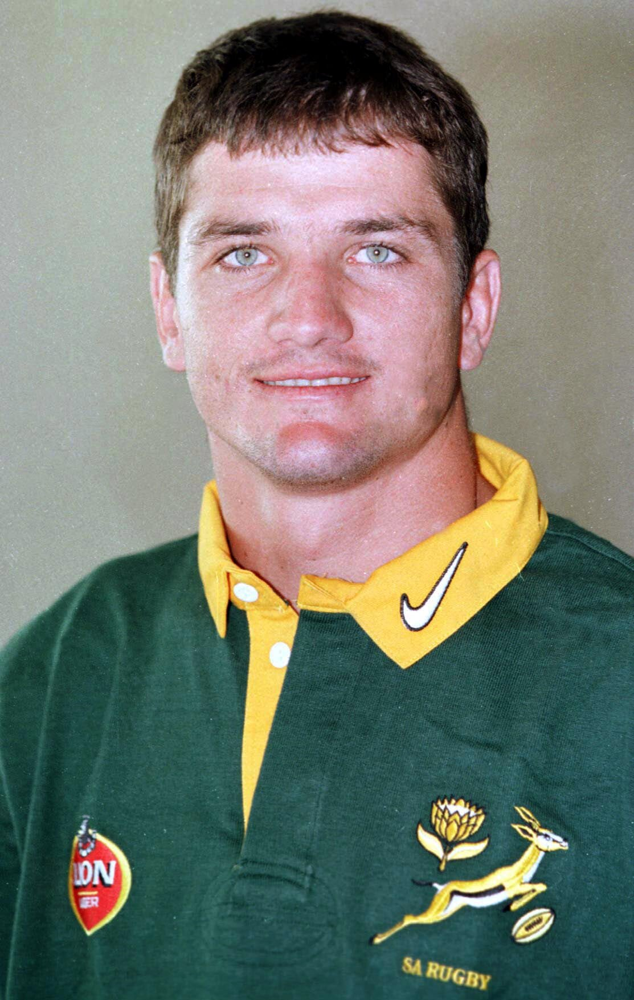

Joost van der Westhuizen
Remembered for his inspirational spirit and dignity
- Born 20 February 1971 in Pretoria.
- Schooled at Hoërskool F.H. Odendaal.
- Attended the University of Pretoria (Tuks).
- Debuted for the Northern Transvaal rugby union (Blue Bulls) in 1992 and continued to play for this provincial team until his retirement.
- Represented South-Africa in sevens rugby in 1993.
- Played an instrumental role in the legendary world cup final win over New Zealand in 1995.
- Captained the South-African rugby team in the 1999 world cup.
- Played his 3rd and final world cup in 2003.
- Retired from international test rugby in 2003.
- In 2011 the legend of the game was diagnosed with incurable moto neurone disease.
- Was inducted in the World Rugby Hall of fame in 2015.
- Died on the 6th of February 2017 at the age of 45.
Achievements:
- Scored 89 tries, and 190 points while playing for South-Africa.
- Made 111 rugby appereances for the South-African rugby team.
- The greatest scrum-half to have appeared at a Rugby World Cup.
- Famous for the tackle he made on the late All Blacks wing Jonah Lomu in the 1995 world cup final which will go down as the most important tackle in South African rugby history as Lomu had been unstoppable.
- Redefining scrum-half play with his pace and power and superb technical skills.